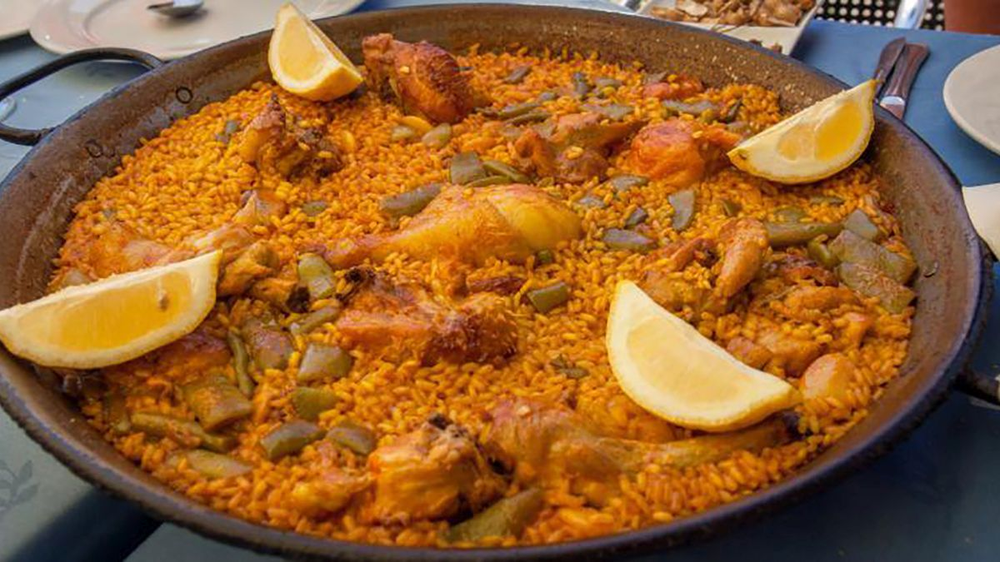
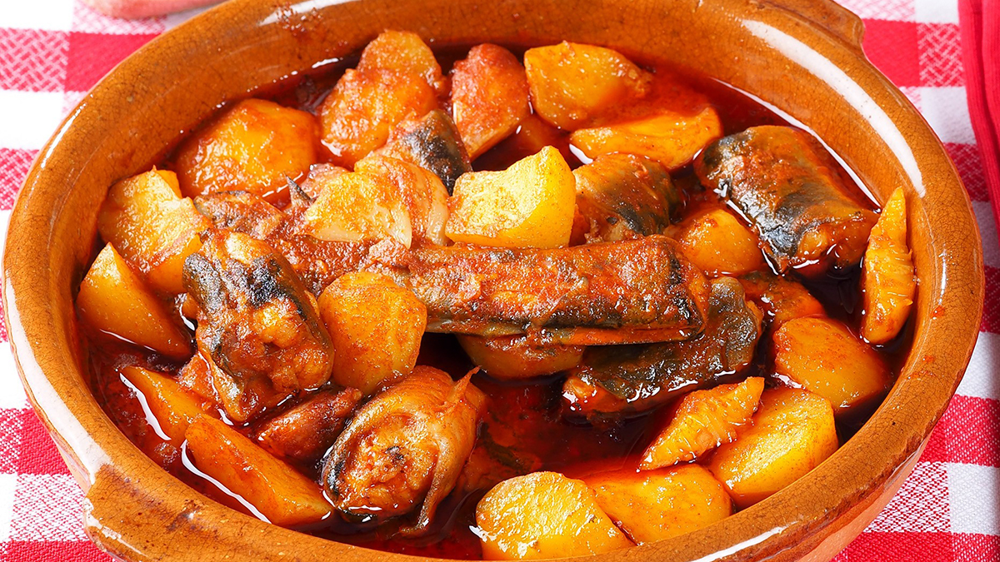
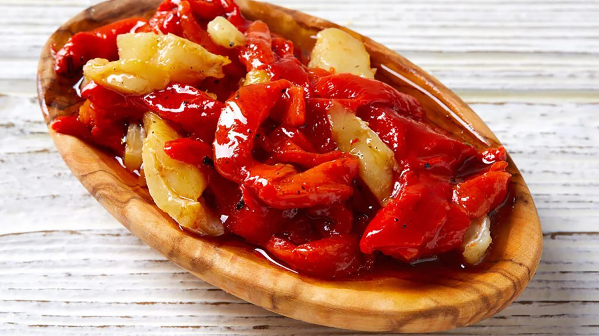
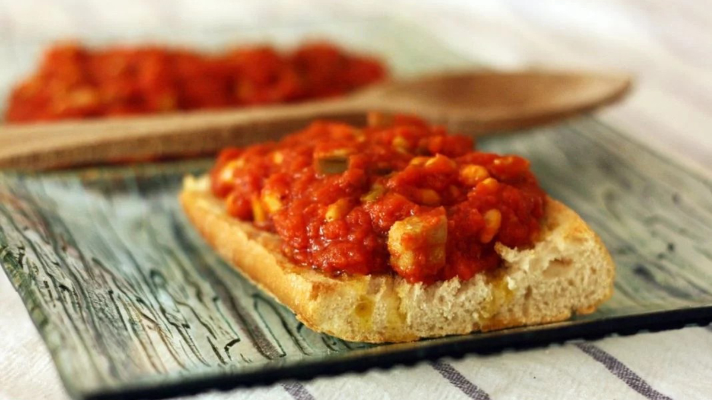
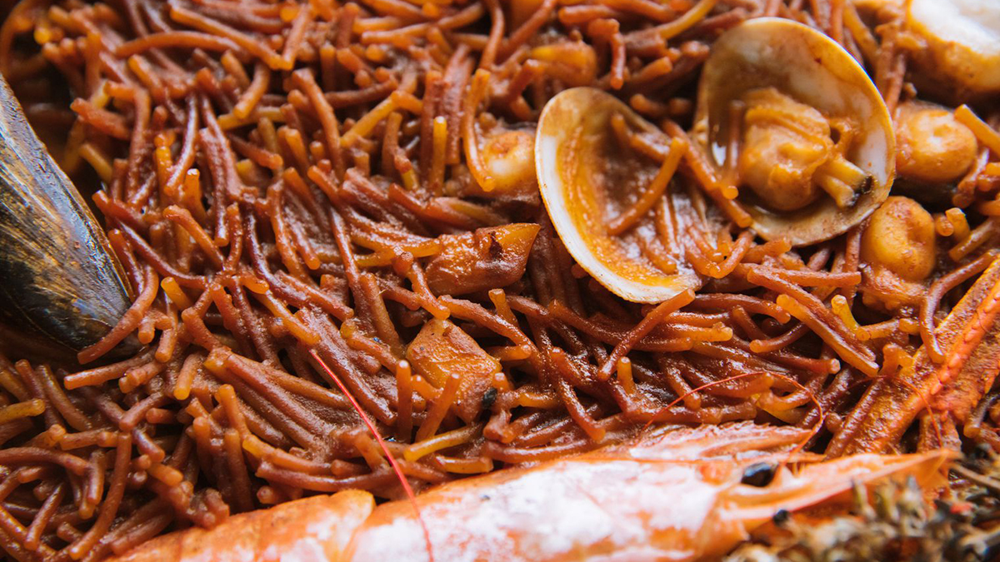
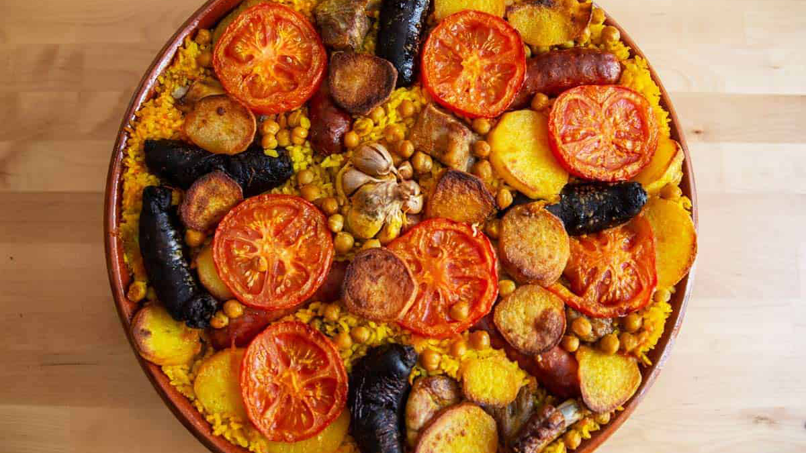

Paella valenciana
El arroz valenciano más emblemático, ligado a una elaboración precisa y a unos ingredientes muy concretos.
Ver detalle de la paella valencianaEsta selección reúne algunas elaboraciones representativas de la cocina valenciana y mediterránea, desde arroces icónicos hasta entrantes y guisos de larga tradición.

El arroz valenciano más emblemático, ligado a una elaboración precisa y a unos ingredientes muy concretos.
Ver detalle de la paella valenciana
Un guiso tradicional de fuerte identidad local, asociado al entorno de la Albufera y a la cocina popular.
Ver detalle del all i pebre
Una combinación sencilla y sabrosa de pimiento asado, bacalao y aceite, muy presente en la mesa valenciana.
Consultar fuentes y referencias
Una receta tradicional del ámbito marinero valenciano, con un perfil muy reconocible y una fuerte raíz popular.
Consultar fuentes y referencias
Aunque elaborada con fideo en vez de arroz, comparte con otros platos mediterráneos la centralidad del sofrito y del caldo.
Consultar fuentes y referencias
Una preparación contundente y doméstica, muy vinculada a la cocina de aprovechamiento y al recetario tradicional.
Consultar fuentes y referencias